Unofficial study solution; not an official GTU answer key. Answers have not been independently verified. English text reflows; source equations, diagrams and Gujarati retain their original appearance. Use Enlarge image to inspect them.
આ બિનસત્તાવાર અભ્યાસ ઉકેલ છે, સત્તાવાર GTU જવાબવહી નથી. PDF માંથી ગુજરાતી લખાણ સાચું નીકળતું નથી, તેથી દરેક જવાબ મૂળ ચિત્રરૂપે જાળવ્યો છે. વાંચવા માટે ચિત્ર મોટું કરો. મૂળ પ્રશ્ન અને પરીક્ષાના વિકલ્પોની સૂચનાઓ અનુસરો.
Coverage: all 28 printed parts, including every OR alternative, are answered in English and easy Gujarati. The paper is 70 marks; OR alternatives do not add marks.
Questions: the original states English is authentic. English question wording is reproduced with only whitespace normalised; Gujarati meanings are unofficial study aids.
Methods: diagrams are schematic; conditions, density assumptions and limitations are stated with each answer.
Important: Summer Q1(c) OR prints Gs as 265. Both the literal result and the conditional result for Gs = 2.65 are shown.
Status: unofficial study material, not an official GTU answer key or a design certification. The original question paper is kept unchanged as a separate PDF.
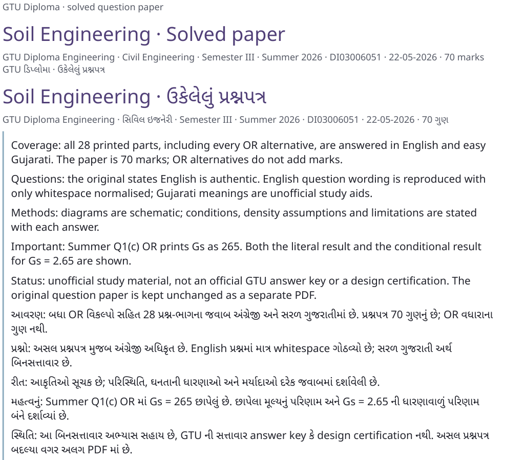
Question 1
Q1 · Soil phases and formation
Q.1 (a) · Establish relation among Sr, w, G and e · 3 marks
Let w = Ww/Ws, Sr = Vw/Vv, e = Vv/Vs and G = Gs = ρs/ρw (specific gravity of solids). Use w and Sr as fractions in the derivation; air weight is neglected.
Ww = ρw g Vw; Ws = Gs ρw g Vs.
w = Ww/Ws = Vw/(Gs Vs).
Since Vw = Sr Vv and Vv = e Vs, w = Sr e/Gs.
Sr e = w Gs.
If both Sr and w are given in percent, the same equation works using both percentage numbers because the factor 100 cancels.
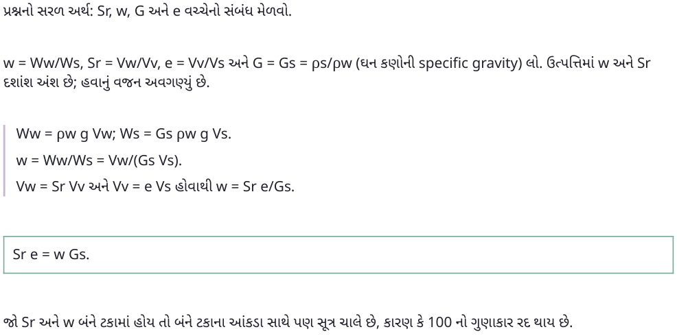
Q.1 (b) · Explain soil formation in geological cycle. · 4 marks
Soil forms when existing rock is broken down and altered by weathering, then may remain at its source or be moved and deposited.
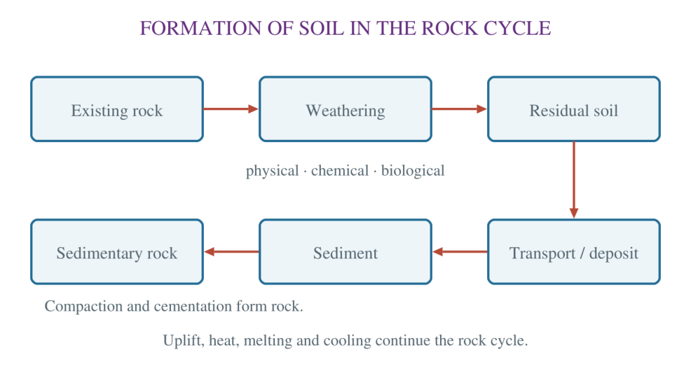
Soil formation is one part of the continuing geological rock cycle.
• Physical: temperature changes, abrasion and freeze–thaw break rock into smaller pieces without necessarily changing minerals.
• Chemical / biological: water, oxidation, solution, roots and organisms alter or disintegrate rock.
• Residual soil stays over parent rock; rivers, wind, ice or gravity form transported deposits. Buried sediments can cement into rock; uplift, heat, melting and cooling continue the cycle.
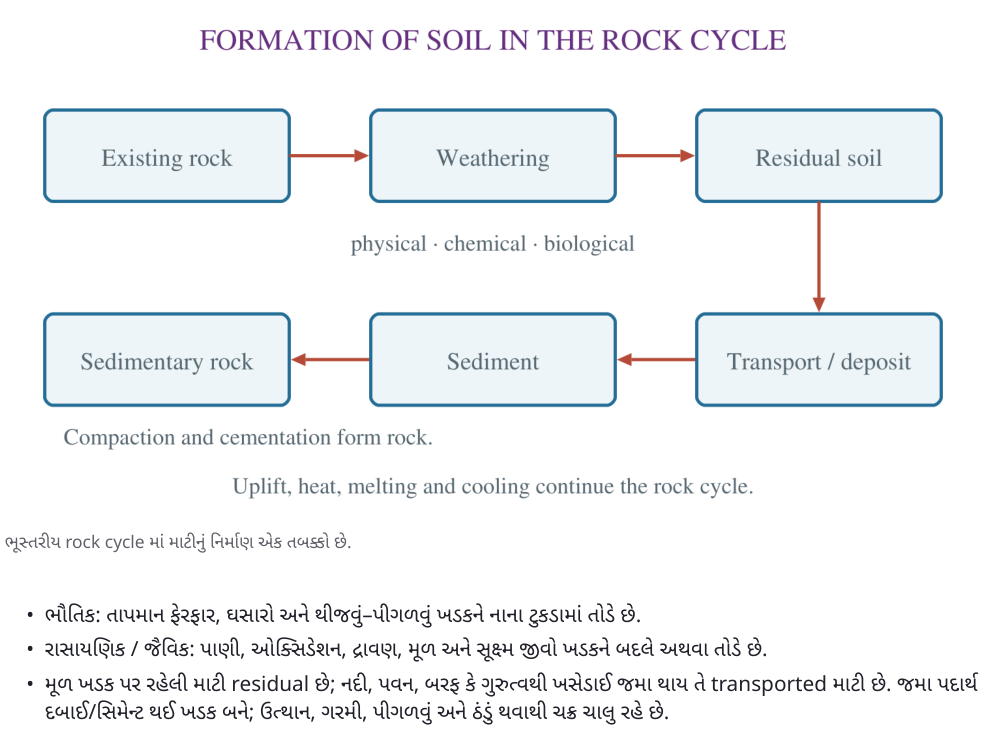
Q.1 (c) · A soil sample has porosity 30% and specific gravity of soil 2.6 Find void ratio, dry density saturated density and submerged density. · 7 marks
Given n = 30% = 0.30 and Gs = 2.6. Take water density ρw = 1.000 Mg/m³ and saturated soil for the saturated and submerged densities.
e = n/(1 − n) = 0.30/0.70 = 0.4286.
ρd = Gs ρw/(1 + e) = 2.6/(1 + 0.4286) = 1.820 Mg/m³.
ρsat = (Gs + e)ρw/(1 + e) = (2.6 + 0.4286)/(1 + 0.4286) = 2.120 Mg/m³.
Submerged/buoyant density ρ′ = ρsat − ρw = 2.120 − 1.000 = 1.120 Mg/m³.
e = 0.4286; ρd = 1.820, ρsat = 2.120, ρ′ = 1.120 Mg/m³.
These are densities, not unit weights. The equivalent unit weights would be densities multiplied by g in consistent units.
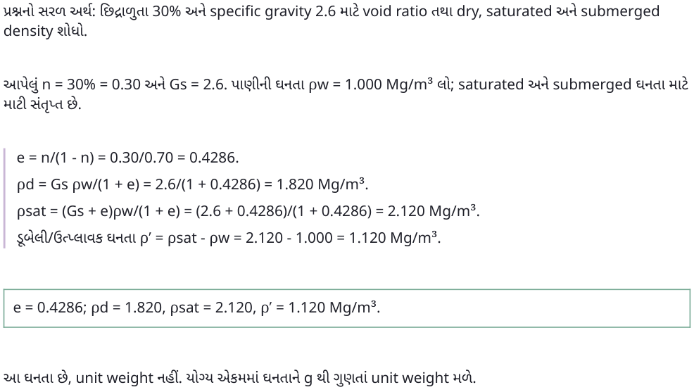
Q.1 (c) · A moist sample has volume 464 cc in natural state and weight of 795 gm, the dry weight is 735 gm. The specific gravity of soil is 265. Determine void ratio, porosity · OR · 7 marks
The source prints specific gravity as 265 in both languages, with no decimal point. 2.65 is a plausible intended value for mineral soil, but that correction is an assumption, not a known fact. Results for both readings follow.
Take ρw = 1 g/cm³. V = 464 cm³, dry mass Ms = 735 g; water mass Mw = 795 − 735 = 60 g.
For any assumed Gs: Vs = Ms/(Gs ρw), Vv = V − Vs, e = Vv/Vs and n = Vv/V.
If Gs = 2.65: Vs = 277.3585 cm³, Vv = 186.6415 cm³, e = 0.67293 and n = 0.402245.
If the printed Gs = 265 is used literally: Vs = 2.7736 cm³, Vv = 461.2264 cm³, e = 166.2925 and n = 0.994022.
Conditional on Gs = 2.65: e ≈ 0.673 and n ≈ 40.22%. Literal Gs = 265 gives e ≈ 166.29 and n ≈ 99.40%.
The literal specific gravity is not credible for ordinary soil. Confirm the intended input with the paper setter; neither result proves which value was intended. The water volume is 60 cm³ and fits in the voids in both mathematical cases.
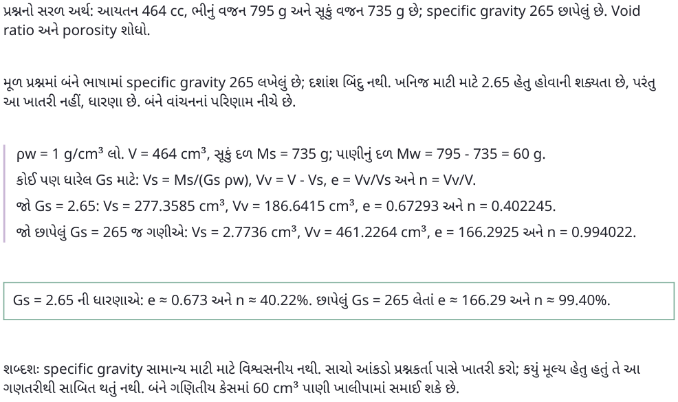
Question 2
Q2 · Phase diagrams and classification
Q.2 (a) · Write assumptions for drawing phase diagram of soil. · 3 marks
• Represent the same soil specimen as separate solid, water and air volumes; V = Vs + Vw + Va and Vv = Va + Vw.
• Neglect air weight; total soil weight is Ws + Ww. Water content is Ww/Ws, not Ww/W.
• For elementary phase calculations take a known water density and treat solids and water as incompressible; describe saturation as Vw/Vv.
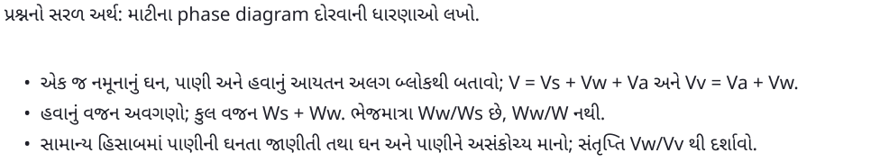
Q.2 (b) · Draw I.S. Plasticity chart with all parameters. · 4 marks
Plot liquid limit LL on the horizontal axis and plasticity index PI = LL − PL on the vertical axis, both in percent.
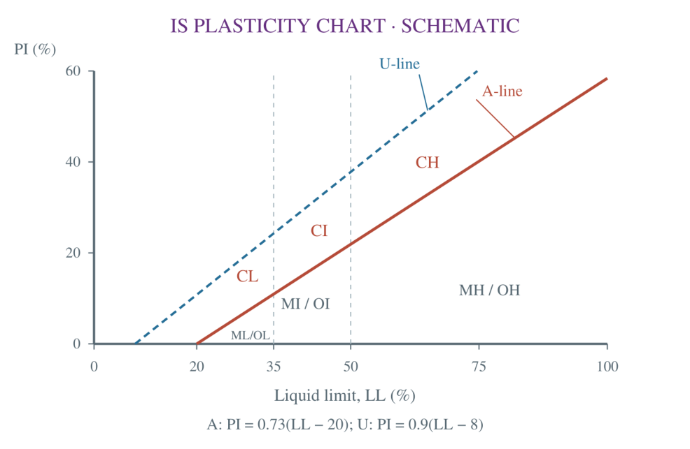
A-line separates typical inorganic clay and silt regions; U-line is an empirical upper bound.
• A-line: PI = 0.73(LL − 20); clay C generally plots above and silt M below. Organic O needs separate identification.
• Vertical divisions at LL = 35 and 50 distinguish low L, intermediate I and high H; symbols include CL, CI, CH and ML, MI, MH.
• U-line PI = 0.9(LL − 8) is a check, not a classification boundary. Results near lines or limits may require a dual symbol and the current IS rules.
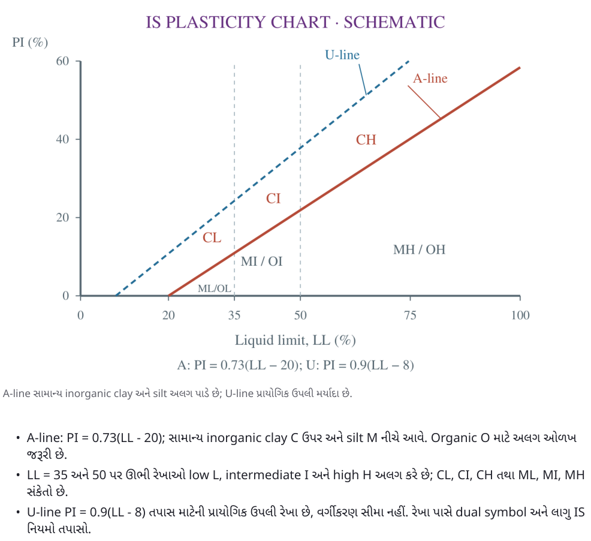
Q.2 (c) · Draw two phase and three phase diagram of soil. · 7 marks
A partly saturated soil contains solids, water and air. The separated blocks are an accounting diagram, not the actual arrangement of grains.
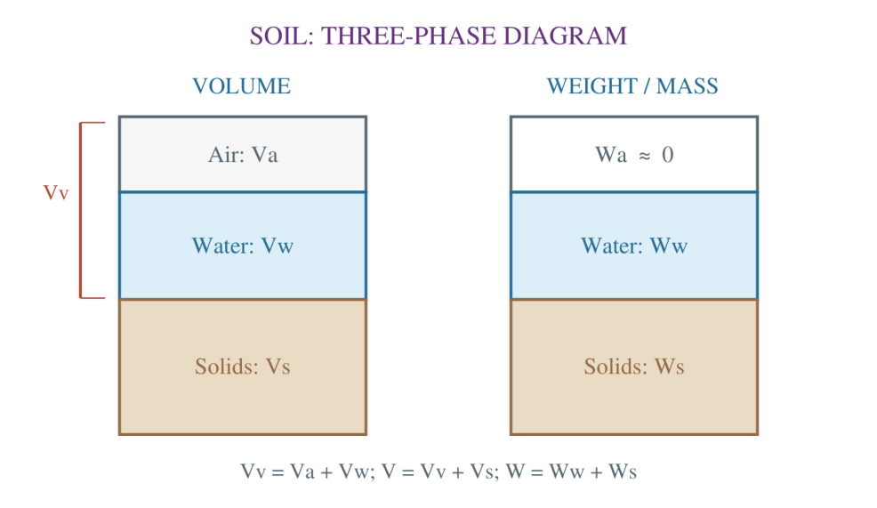
Three phases: V is volume and W is weight. Air weight is neglected.
V = Vs + Vw + Va; void volume Vv = Va + Vw. Total weight W ≈ Ws + Ww. Void ratio e = Vv/Vs; porosity n = Vv/V; degree of saturation Sr = Vw/Vv; water content w = Ww/Ws.
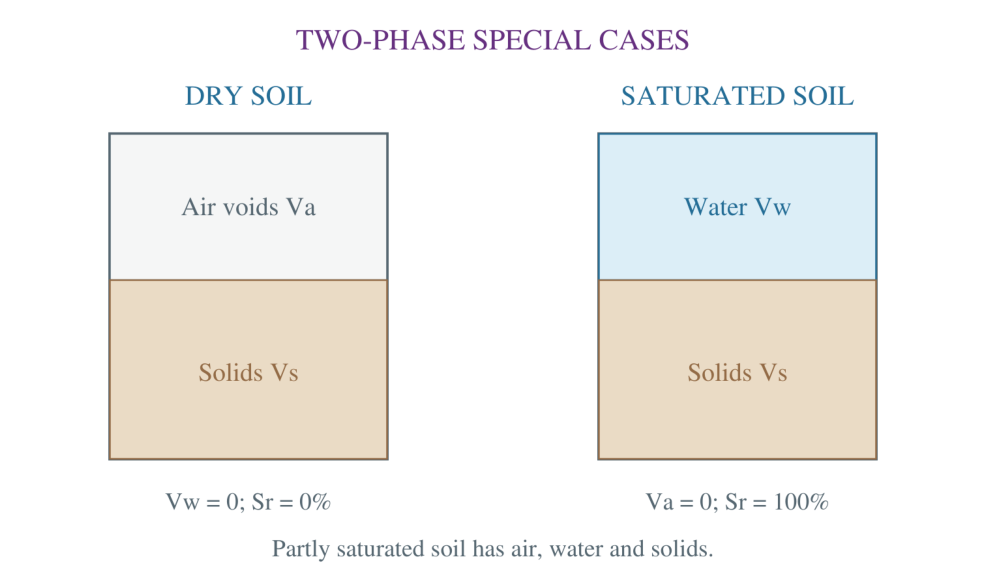
The two-phase limits are completely dry or fully saturated.
Dry soil has solids and air (Vw = 0, Sr = 0); fully saturated soil has solids and water (Va = 0, Sr = 1). A partly saturated sample needs all three phases. The same total volume and mass balance apply in each case.
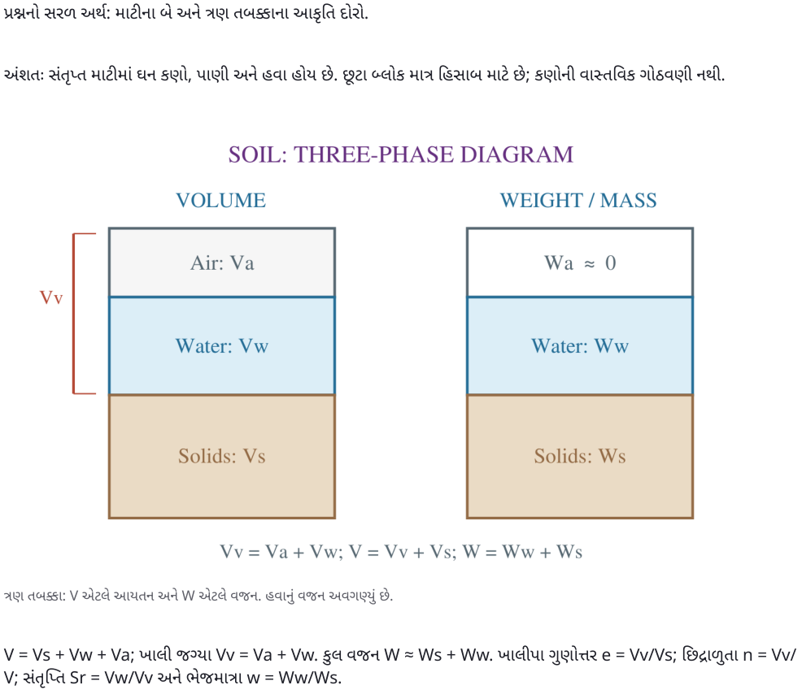
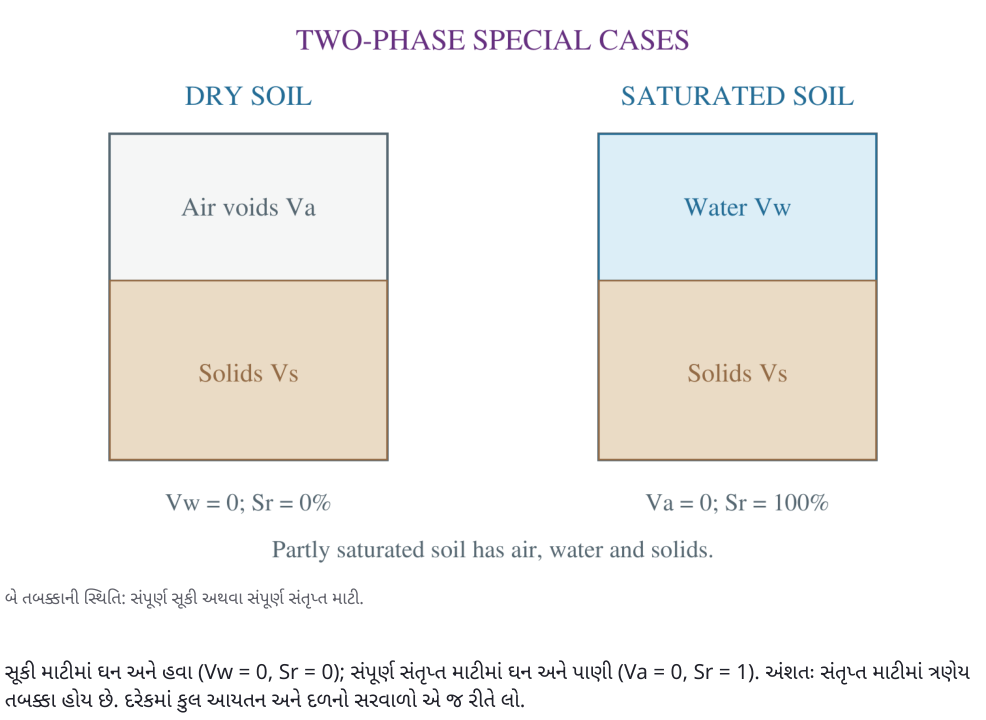
Q.2 (a) · Explain Plastic limit test of soil in detail. · OR · 3 marks
Plastic limit PL is the water content at which soil just changes from the plastic to the semi-solid, crumbly state.
1. Use soil passing the 425 μm sieve and mix with water into a workable mass.
2. Roll small portions on a clean glass plate into threads. Re-knead and reroll until a thread just crumbles at about 3 mm diameter.
3. Collect the crumbled pieces in a moisture container; determine their water content. Repeat and report the representative average as PL.
If a 3 mm thread cannot be formed, report the material as non-plastic rather than inventing a PL.
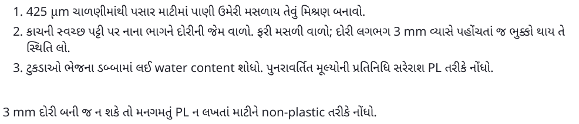
Q.2 (b) · Draw the scale of soil classification as per Indian standard. · OR · 4 marks
The Indian particle-size scale gives size names. Limits are nominal sieve or sedimentation sizes; the chart is not a complete plasticity-based soil classification.
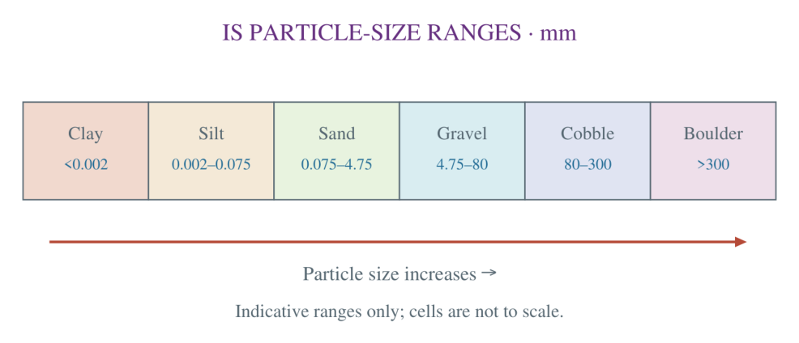
Ranges are schematic, not a linear or logarithmic drawing.
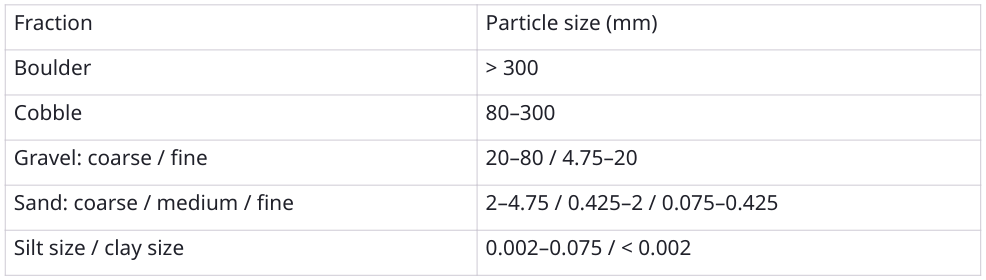
Clay-size is a particle-size description; classify actual fine soils by their plasticity and organic character too.
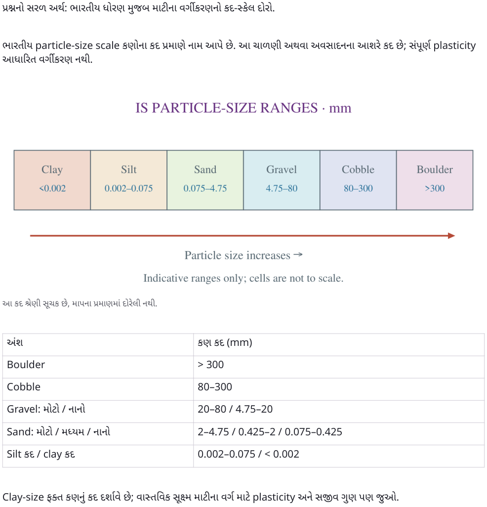
Q.2 (c) · Test on a soil sample gave the following properties: Natural water content=24%, liquid limit=49%,Plastic limit=28%, D60=0.06mm, D30=0.04mm, D10=0.008mm.Calculate the plasticity index, uniformity coefficient, coefficient of curvature and consistency index for the soil. · OR · 7 marks
Given w = 24%, LL = 49%, PL = 28%, D60 = 0.06 mm, D30 = 0.04 mm and D10 = 0.008 mm.
PI = LL − PL = 49 − 28 = 21%.
Cu = D60/D10 = 0.06/0.008 = 7.5.
Cc = D30²/(D10 D60) = 0.04²/(0.008 × 0.06) = 3.333.
Consistency index Ic = (LL − w)/PI = (49 − 24)/21 = 1.1905.
PI = 21%; Cu = 7.5; Cc ≈ 3.33; Ic ≈ 1.19.
Ic exceeds 1 because w is below the plastic limit. The indices and coefficients are dimensionless except that PI is commonly reported in percentage points.
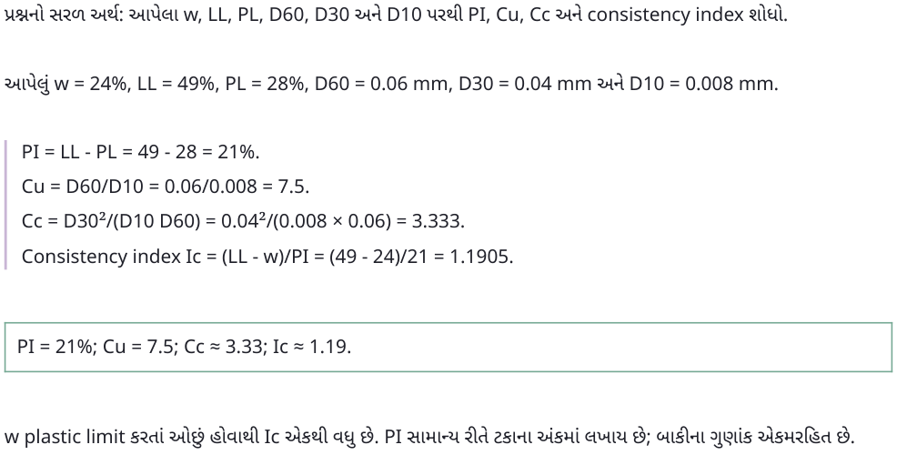
Question 3
Q3 · Shear strength and soil compaction
Q.3 (a) · Define cohesion and angle of internal friction with their notations. · 3 marks
• Cohesion c (or c′): shear-strength envelope intercept, measured in stress units such as kPa.
• Angle of internal friction φ (or φ′): angle whose tangent is the slope of the Mohr–Coulomb strength envelope on shear versus corresponding normal stress.
• State whether the values are total-stress or effective-stress parameters and the drainage condition.
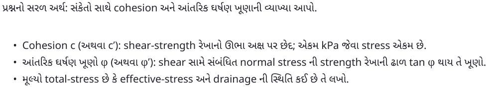
Q.3 (b) · Enlist objectives of Site Exploration. · 4 marks
• Establish soil and rock layer sequence, thickness and lateral variation at the proposed site.
• Locate groundwater level and possible seasonal changes; identify seepage, cavities or weak/ problematic strata.
• Obtain representative disturbed and relatively undisturbed samples and in-situ/laboratory test data for strength, compressibility and permeability.
• Select foundation type/depth, estimate bearing and settlement, plan excavation/ground improvement, and reduce uncertainty and construction risk.
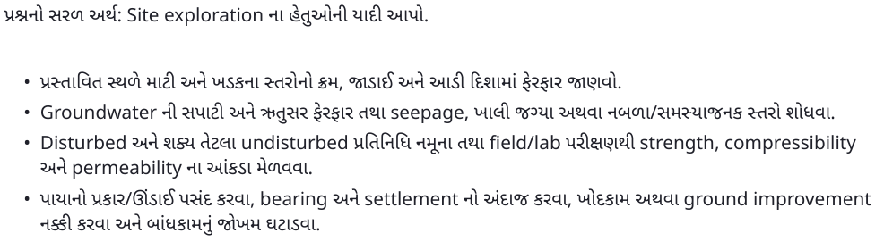
Q.3 (c) · A clayed soil sample has water content 45%, Liquid limit 52% and Plastic limit 27%. Calculate Plasticity Index, Liquidity Index and Consistency Index. · 7 marks
Given w = 45%, LL = 52%, PL = 27%.
PI = LL − PL = 52 − 27 = 25%.
LI = (w − PL)/PI = (45 − 27)/25 = 0.72.
Ic = (LL − w)/PI = (52 − 45)/25 = 0.28.
Check: LI + Ic = 0.72 + 0.28 = 1.
Plasticity index = 25%; liquidity index = 0.72; consistency index = 0.28.
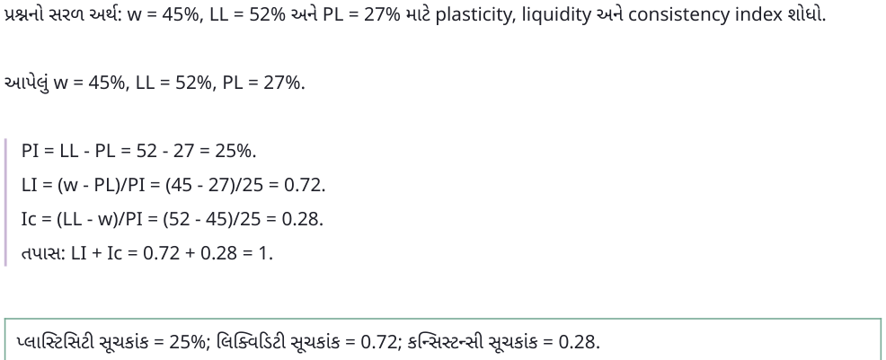
Q.3 (a) · Explain: C-soil, ϕ-soil and C-ϕ soil. · OR · 3 marks
• c soil (ideal cohesive): c > 0, φ = 0 in the chosen analysis; τf = c. An undrained saturated-clay total-stress idealisation is a common example.
• φ soil (ideal cohesionless): c = 0, φ > 0; τf = σ tan φ on the chosen stress basis, as often idealised for clean sand.
• c–φ soil: both c and φ are non-zero in the chosen Mohr–Coulomb representation. Real parameters change with stress path, drainage and state.
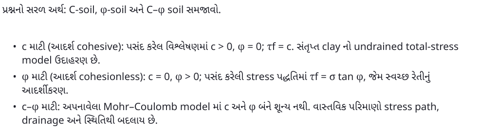
Q.3 (b) · Explain Coulomb’s law for shear strength. · OR · 4 marks
Mohr–Coulomb expresses the shear stress at failure as an approximately linear function of normal stress for a specified soil condition.
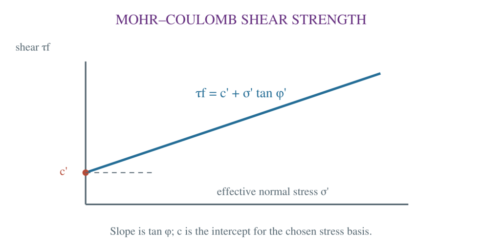
Effective-stress envelope: intercept c′, slope tan φ′.
τf = c′ + σ′n tan φ′
Here σ′n = σn − u when pore pressure u is appropriate; c′ is effective cohesion and φ′ is the effective friction angle. Use compatible total-stress c and φ with total normal stress for a total-stress test; do not mix the two sets.
The line is an engineering approximation over a stress range, not a universal exact material law.
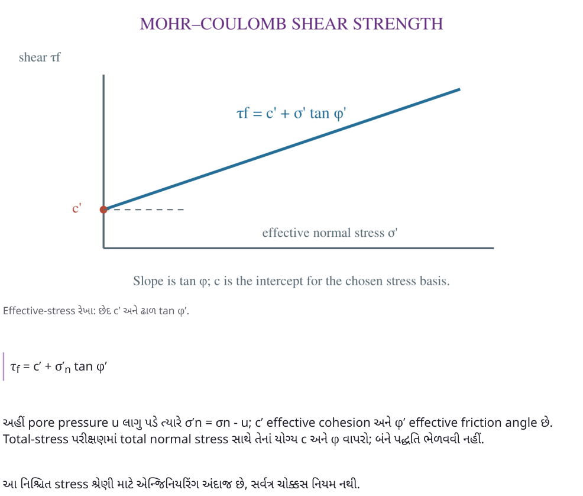
Q.3 (c) · Explain Standard Proctor test in detail. · OR · 7 marks
The IS light compaction test, similar to Standard Proctor, obtains the water-content/dry-density relation for a specified compactive effort; the peak defines OMC and MDD for that effort.
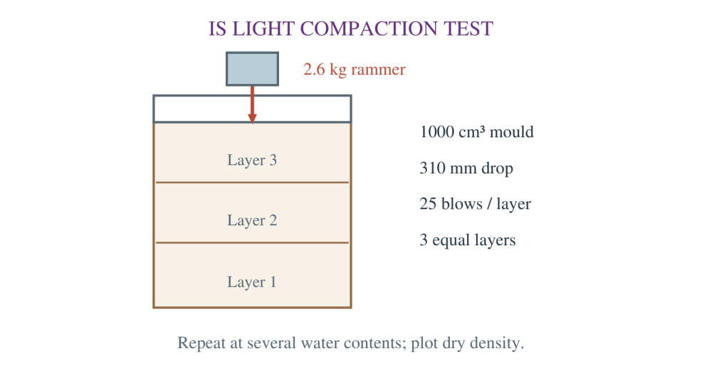
IS light test using the 1000 cm³ mould; layers are compacted bottom to top.
1. Prepare a representative soil sample according to the test procedure; determine the mould volume and the mass of the empty mould.
2. Mix a measured amount of water uniformly. Place the moist soil in a 1000 cm³ mould in three approximately equal layers.
3. Compact each layer uniformly with 25 blows of a 2.6 kg rammer falling freely through 310 mm. Scarify the layer surface as specified before placing the next layer.
4. Remove collar; trim the top flush. Weigh the mould and compacted soil, calculate bulk density ρ = wet soil mass / mould volume and measure actual water content w.
5. Calculate ρd = ρ/(1 + w), with w in decimal. Repeat for several water contents bracketing the peak; plot ρd against w and read the peak MDD and corresponding OMC.
Keep soil preparation and effort consistent; MDD is not a universal density. Compare field dry density only with the specified reference test and use the current standard for detailed practice.
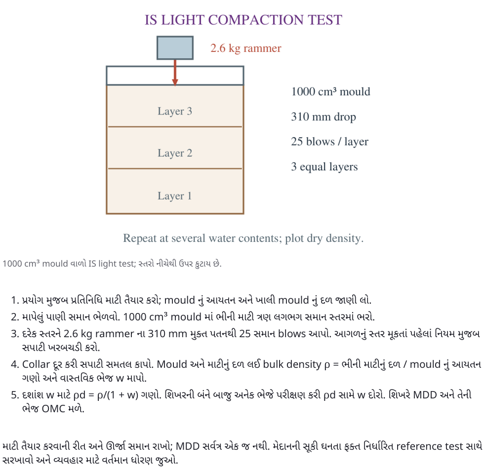
Question 4
Q4 · Permeability and compaction
Q.4 (a) · Enlist importance of Permeability in Civil Engineering. · 3 marks
• Estimate seepage through earth dams, embankments and foundations, and the resulting water loss.
• Design drainage, filters, dewatering and excavation control; check uplift and piping risks.
• Understand pore-pressure dissipation and the rate of consolidation/settlement in saturated soil.
• Assess infiltration and movement of groundwater or contaminants.
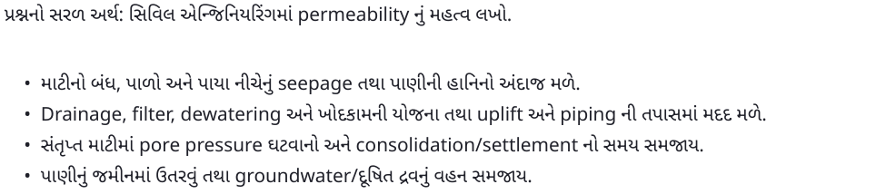
Q.4 (b) · Explain Compaction Curve. Also Explain O.M.C. & M.D.D. · 4 marks
For each trial at the same specified compaction effort, plot measured water content on x and computed dry density ρd on y. Join the points with a smooth best-fit curve.
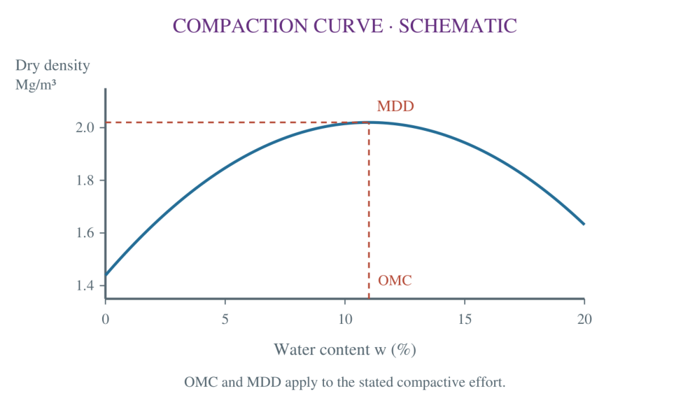
Illustrative curve; its peak defines OMC and MDD.
• OMC: optimum moisture content, the water content at the peak.
• MDD: maximum dry density, the peak dry density obtained for that soil and specified effort.
• On the dry side, additional water can ease rearrangement; on the wet side extra water tends to prevent closer packing. Changing effort changes the curve.
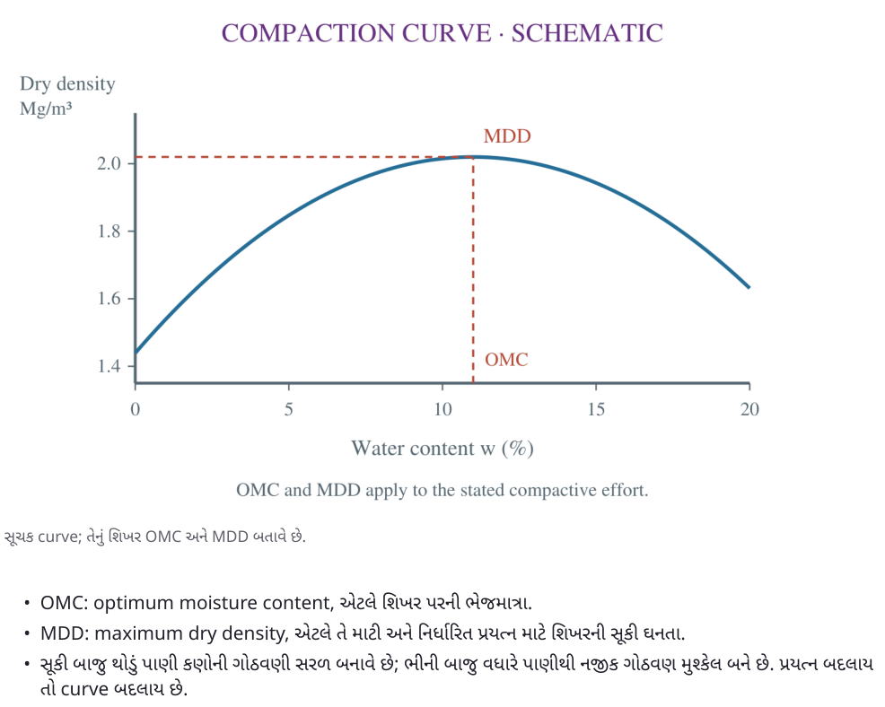
Q.4 (c) · Explain Light Compaction Test carried out in laboratory. · 7 marks
The IS light compaction test, similar to Standard Proctor, obtains the water-content/dry-density relation for a specified compactive effort; the peak defines OMC and MDD for that effort.

IS light test using the 1000 cm³ mould; layers are compacted bottom to top.
1. Prepare a representative soil sample according to the test procedure; determine the mould volume and the mass of the empty mould.
2. Mix a measured amount of water uniformly. Place the moist soil in a 1000 cm³ mould in three approximately equal layers.
3. Compact each layer uniformly with 25 blows of a 2.6 kg rammer falling freely through 310 mm. Scarify the layer surface as specified before placing the next layer.
4. Remove collar; trim the top flush. Weigh the mould and compacted soil, calculate bulk density ρ = wet soil mass / mould volume and measure actual water content w.
5. Calculate ρd = ρ/(1 + w), with w in decimal. Repeat for several water contents bracketing the peak; plot ρd against w and read the peak MDD and corresponding OMC.
Keep soil preparation and effort consistent; MDD is not a universal density. Compare field dry density only with the specified reference test and use the current standard for detailed practice.

Q.4 (a) · Enlist factors affecting permeability of soil and explain any one in detail. · OR · 3 marks
• Grain size and grading: larger interconnected pores generally permit faster flow; fines can fill the pores.
• Void ratio and compaction: smaller interconnected voids usually lower conductivity, other things equal.
• Structure / stratification: pore connectivity, fissures and flow direction make permeability anisotropic.
• Saturation and entrapped air: air blocks flow paths; test conditions must be stated.
• Fluid and temperature: viscosity and density change hydraulic conductivity; warm water is less viscous.
• Mineralogy and adsorbed water: clay surfaces, pore-fluid chemistry and fabric influence fine- soil flow.
One factor in detail — void ratio: for the same soil, pore fluid and saturated condition, compaction usually reduces void ratio and narrows the connected flow channels. At the same gradient the discharge and k commonly fall. The relation is not exact: fissures and changes in soil fabric can alter the result.
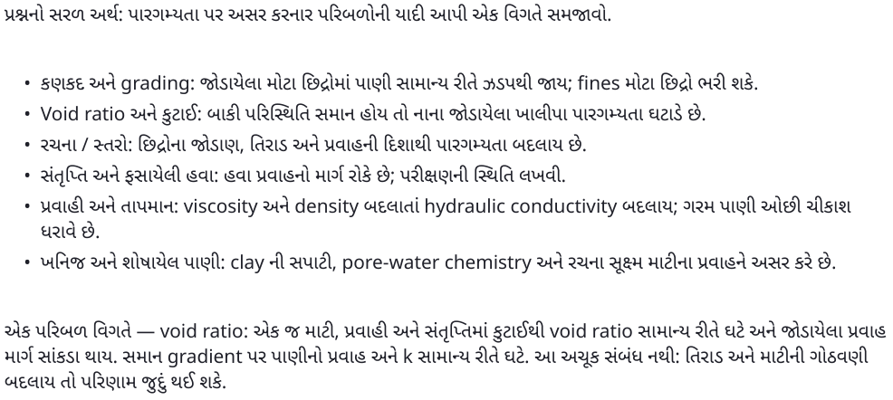
Q.4 (b) · Explain Mechanical soil stabilization and Chemical soil stabilization. · OR · 4 marks
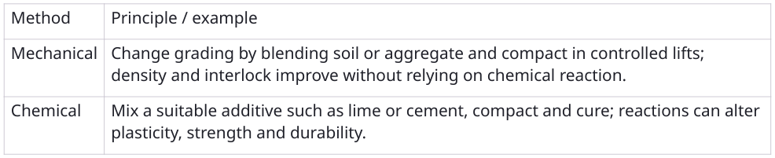
Select the additive and dose from laboratory trials and project specifications. Not all soils respond equally; check sulfates, water, curing and environmental effects.
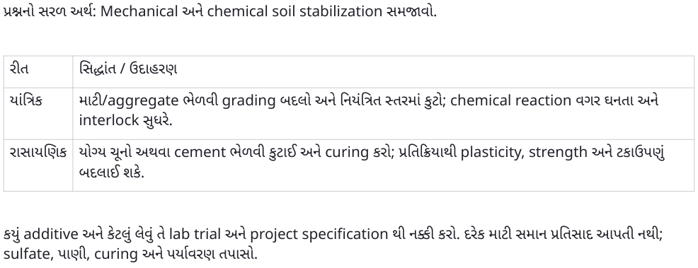
Q.4 (c) · Explain Constant Head Permeability Test with diagram in detail. · OR · 7 marks
The constant-head test measures saturated hydraulic conductivity of relatively permeable soil, typically coarse sand, under steady approximately laminar flow.
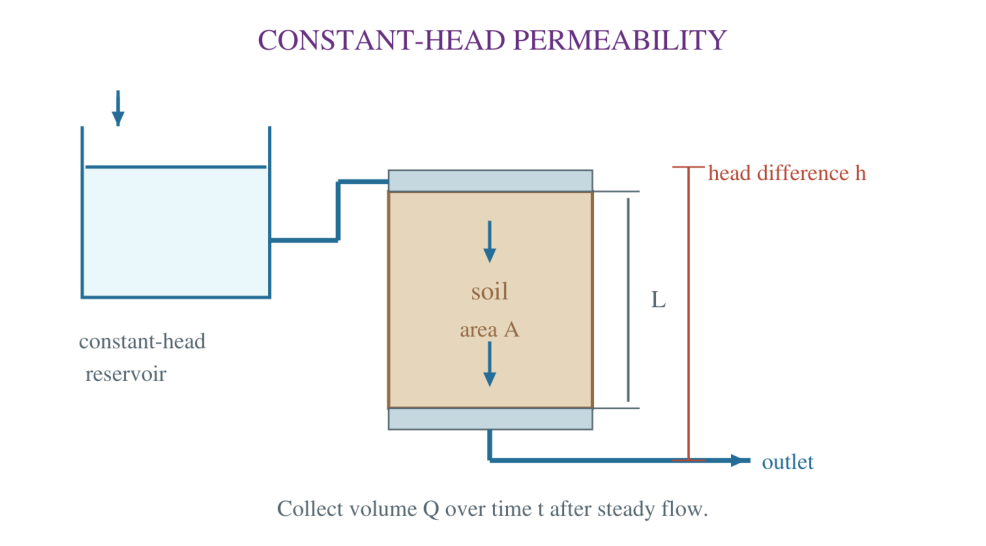
Reservoir and outlet maintain a constant total-head difference across the specimen.
1. Prepare a representative specimen of length L and cross-sectional area A between porous stones and filters. Saturate carefully from below, avoiding trapped air.
2. Connect a constant-head reservoir and outlet; allow flow to become steady and measure head difference h across length L.
3. Collect water volume Q over measured time t. Repeat readings and record water temperature.
4. Darcy law: discharge rate Q/t = k A(h/L), hence k = QL/(A h t). Keep units consistent and report k in m/s (or cm/s).
Prevent leaks and side flow. Darcy flow and full saturation are assumptions; a falling-head test is commonly used when flow is too slow to measure accurately by this method.
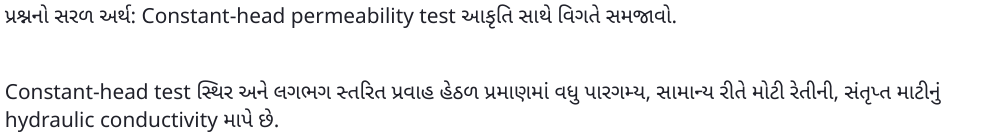
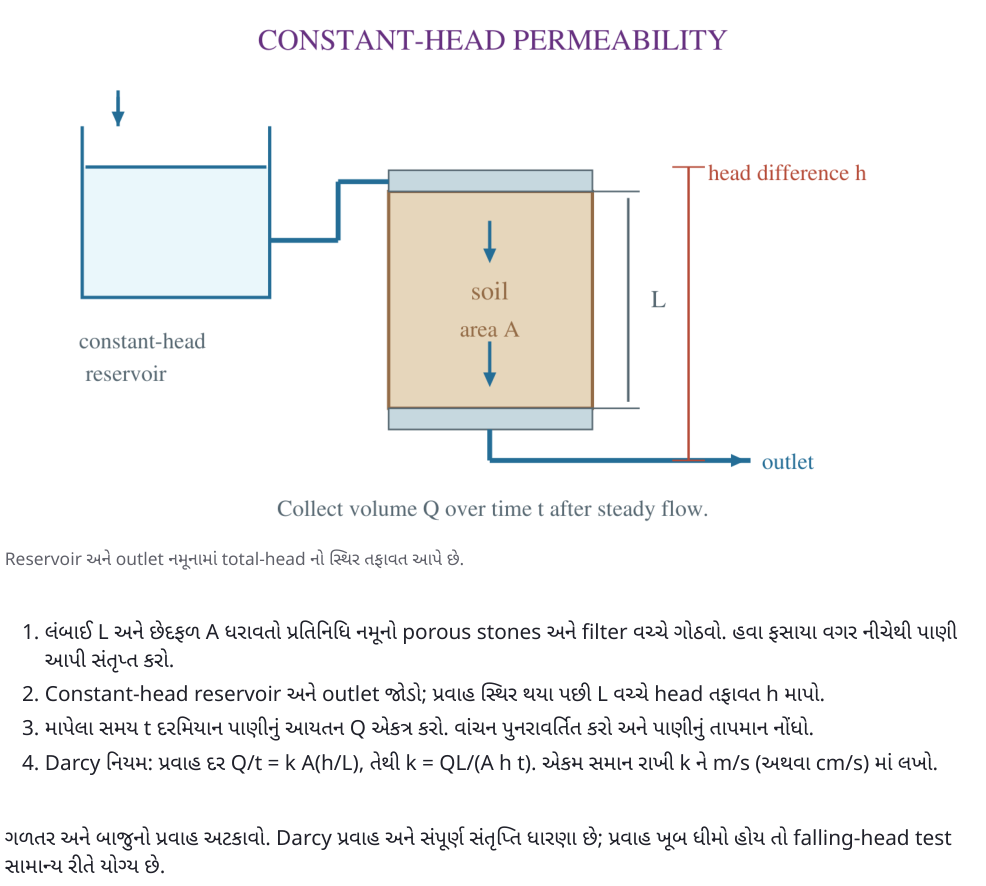
Question 5
Q5 · Shear tests and foundations
Q.5 (a) · Explain Merits and Limitations of Box shear Test. · 3 marks
In a direct/box shear test, a specimen in a split box is sheared along the split under an applied normal load.
• Merits: simple, inexpensive and quick; suitable for granular soils and soil–interface comparisons; drainage can be allowed for suitable slow tests.
• Limitations: failure is forced onto the box plane, stresses are nonuniform and contact area changes during displacement.
• Pore-pressure measurement/control is difficult in the conventional box, so undrained/effective parameters require appropriate equipment and interpretation.
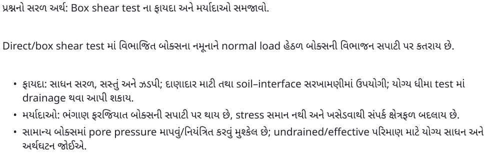
Q.5 (b) · State the parameters that are used for determining the bearing capacity of soil. · 4 marks
• Soil shear parameters c′, φ′ (or appropriate undrained strength), effective unit weight and the layering below the footing.
• Footing width, shape and embedment depth; groundwater level and surcharge near foundation level.
• Magnitude, inclination and eccentricity of the applied load; ground/footing-base slope and nearby foundations.
• Drainage and loading condition, settlement limits and required factor of safety. Bearing resistance and permissible settlement must both be checked.
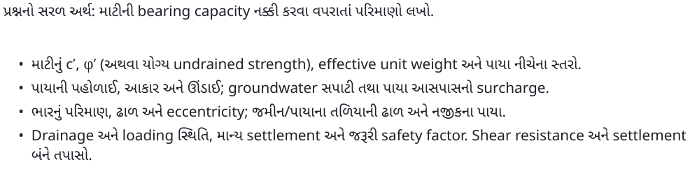
Q.5 (c) · Explain Liquefaction, its causes, effect and state remedies for Liquefaction. · 7 marks
Liquefaction is a major loss of effective stress and shear resistance in susceptible saturated, usually loose granular soil when excess pore-water pressure rises rapidly.
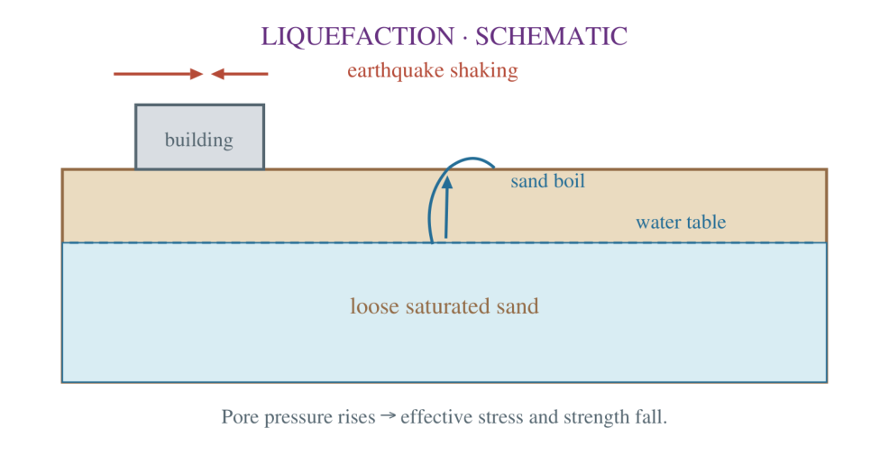
Earthquake shaking, shallow groundwater and a possible sand boil; schematic.
• Causes: repeated earthquake shaking or other rapid loading of loose saturated sand/silty sand, with little time for drainage, builds pore pressure; susceptibility is site-specific.
• Effects: settlement and tilt of buildings, loss of bearing, lateral spreading, sand boils, damaged buried pipes and possible flow failure.
• Remedies: investigate the site and, where appropriate, densify or replace susceptible soil, use engineered drains or grouting, or design deep foundations to competent strata and for lateral movement. Avoid high-risk sites where practical.
Remedies require geotechnical investigation and design; they are not a guaranteed cure at every site.
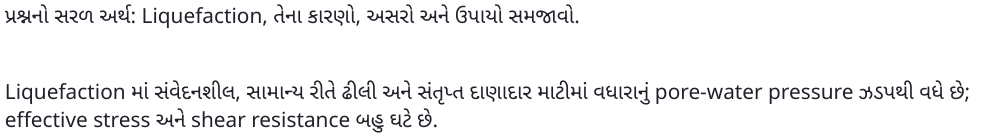
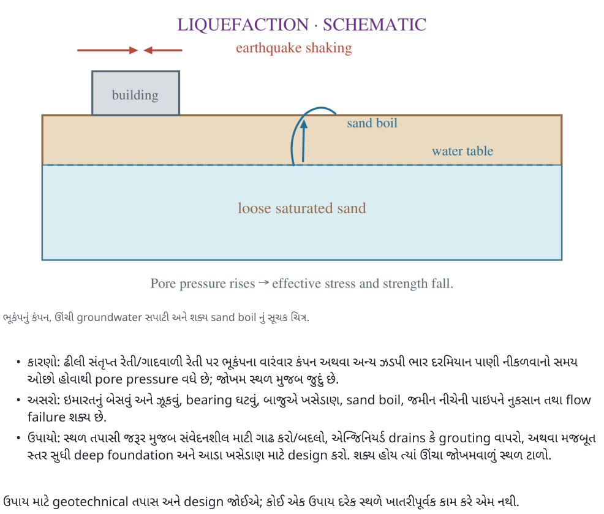
Q.5 (a) · State only names of different types of Bearing Capacities. · OR · 3 marks
Names commonly used:
• Gross ultimate bearing capacity.
• Net ultimate bearing capacity.
• Net safe bearing capacity against shear (with a stated factor of safety).
• Allowable bearing pressure/capacity after considering both shear safety and permissible settlement.
Gross and net use different surcharge references; do not treat these names as interchangeable.
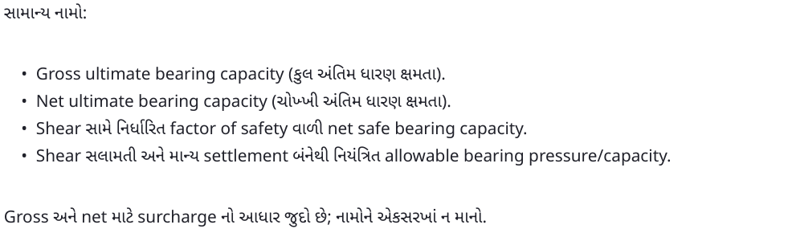
Q.5 (b) · Differentiate between general shear failure and local shear failure. · OR · 4 marks
General and local shear describe idealised failure modes beneath a loaded footing; the actual mode depends on density, compressibility, stress level and geometry.
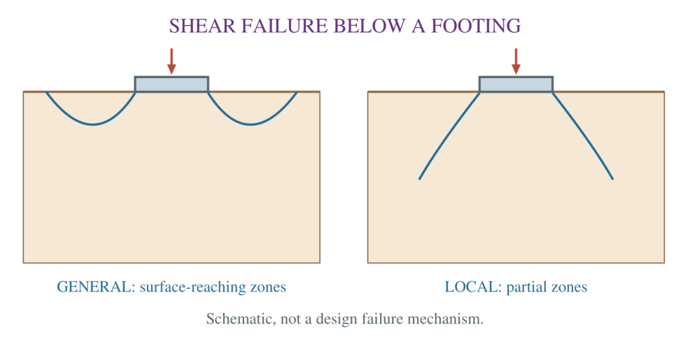
General zones reach the ground surface; local zones are only partly developed.
Feature General shear Local shear
Typical soil Dense sand or stiff clay Medium/loose sand or softer, compressible clay
Failure zones Well-developed and reach ground surface
Partly developed and less distinct
Surface Noticeable bulging/heave may occur Little or less distinct surface heave
Load– settlement
Clear peak or sudden failure at relatively small movement
Progressive yield, no sharp peak; larger settlement
Interpretation Ultimate load more clearly defined Settlement often governs before clear collapse
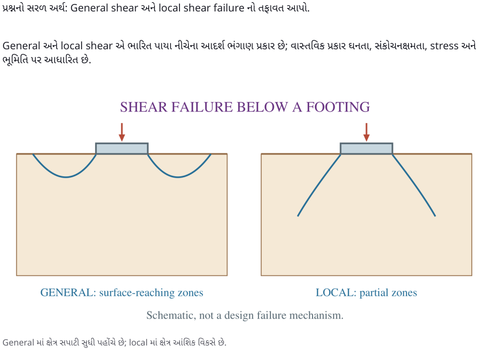
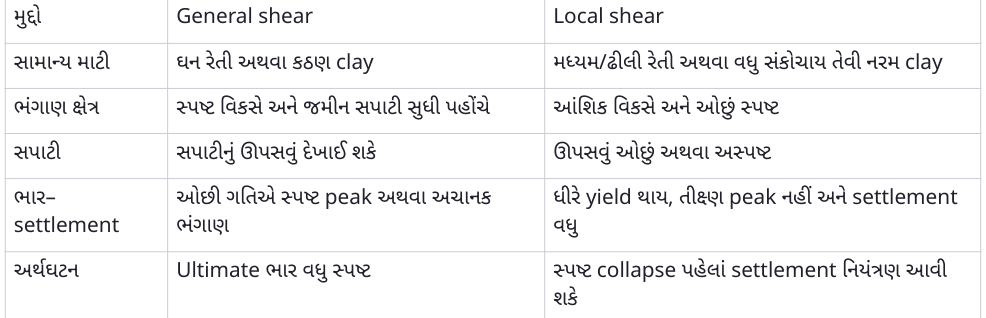
Q.5 (c) · Explain the types of foundation and describe in detail. · OR · 7 marks
Foundations transfer structural loads to the ground with acceptable shear safety and settlement. Main groups are shallow and deep foundations.
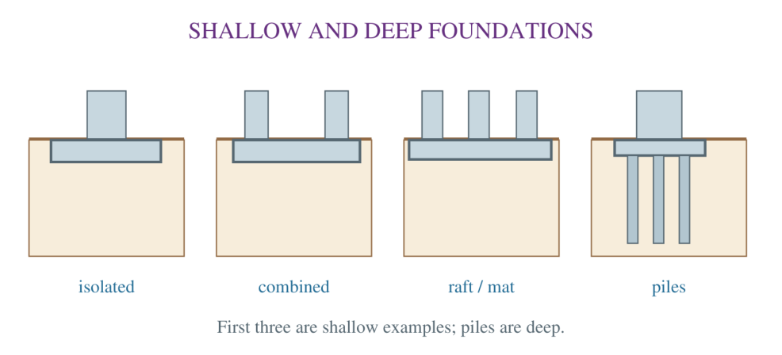
Typical shallow pads, combined and raft foundations, and a deep pile group.
• Shallow isolated / strip: spread a column or wall load over a wider near-surface area; use when a competent layer is shallow and settlement is acceptable.
• Combined / strap: one combined slab supports two or more columns; alternatively separate pads linked by a strap balance eccentric loads near a boundary.
• Raft / mat: a large slab supports several columns or walls and spreads load over much of the footprint; it can help where individual footings would overlap.
• Deep pile / pier / well: transfer load through weak upper strata to stronger or deeper soil/rock and/or through shaft resistance; choose and test for the load and ground conditions.
The source English asks for foundation types in detail; the Gujarati asks for any two. Both shallow and deep groups and several examples are explained here.
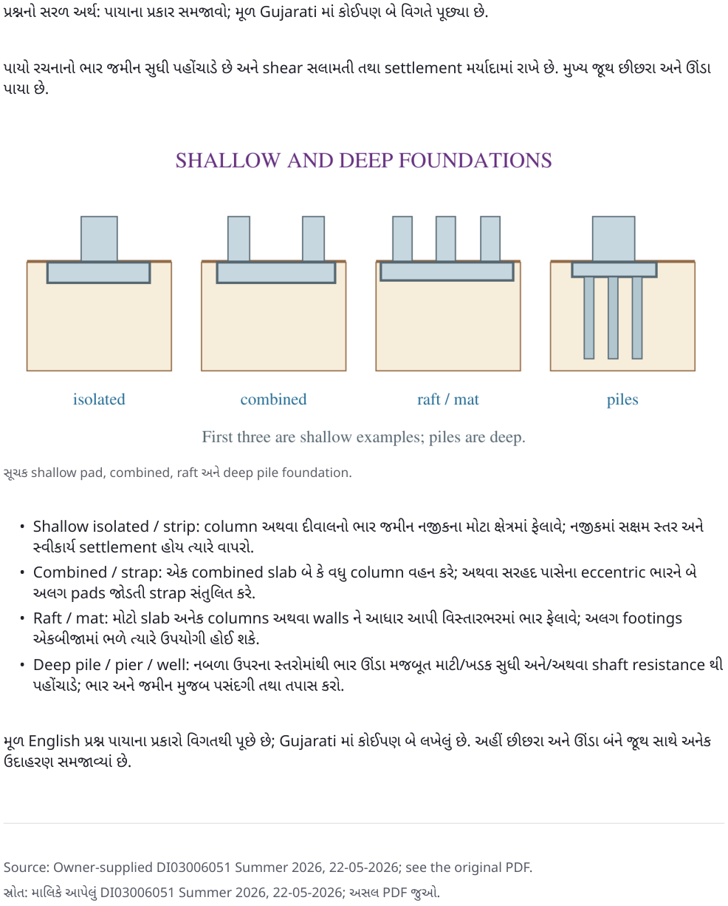